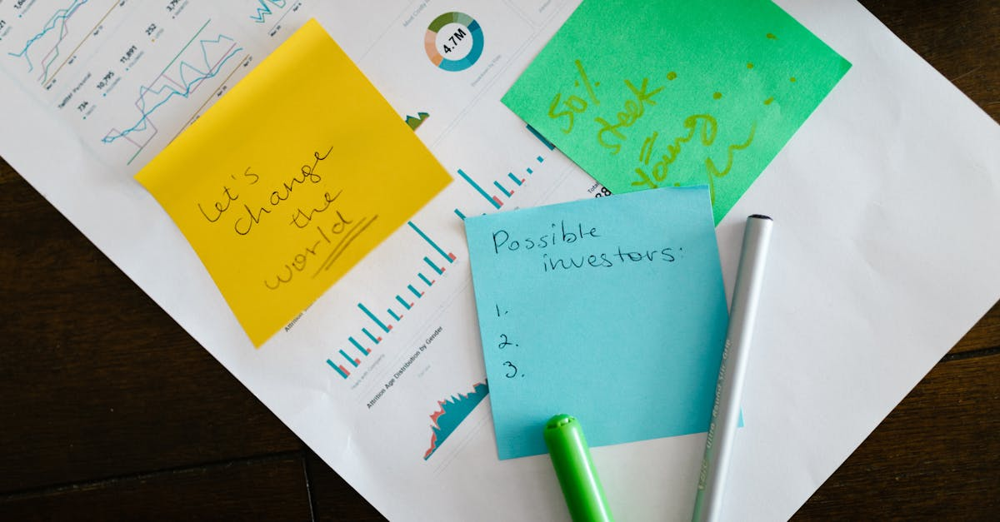

L'onde de choc géopolitique sur les marchés émergents
Le Moyen-Orient, théâtre d'une escalade des tensions depuis maintenant trois mois, jette une ombre grandissante sur l'économie mondiale. Si l'impact direct sur le Chili peut sembler lointain, les marchés financiers, par leur nature interconnectée, réagissent au moindre frémissement géopolitique. La dernière flambée de violence, impliquant directement l'Iran, a ravivé les craintes d'une déstabilisation régionale plus large, susceptible d'affecter les chaînes d'approvisionnement mondiales, les prix de l'énergie et, par conséquent, la confiance des investisseurs. Au Chili, pays dont l'économie est fortement dépendante des exportations de matières premières, notamment le cuivre, toute perturbation majeure du commerce international représente un risque non négligeable. Les analystes financiers se montrent partagés : certains craignent une fuite des capitaux vers des actifs jugés plus sûrs, tandis que d'autres estiment que l'impact sera limité et temporaire. Cette incertitude croissante pose un défi majeur pour les épargnants et les investisseurs cherchant à préserver et faire fructifier leur capital. Dans ce contexte volatile, l'agilité et la capacité d'anticipation deviennent des atouts cruciaux. Une gestion de portefeuille réactive, capable de s'adapter rapidement aux nouvelles données du marché, prend tout son sens. C'est précisément là que des outils d'analyse avancés, potentiellement assistés par l'intelligence artificielle, peuvent offrir un avantage significatif, en scrutant en temps réel une multitude de facteurs économiques et géopolitiques pour identifier des opportunités ou des menaces avant qu'elles ne se matérialisent pleinement.
👉 À lire : Iran Nucléaire : Risques Géopolitiques pour Vos Placements

La Banque Centrale du Chili tire la sonnette d'alarme
Face à cette conjoncture internationale tendue, la Banque Centrale du Chili n'a pas manqué de souligner l'accroissement des incertitudes. Dans ses dernières communications, l'institution monétaire a clairement indiqué que le niveau d'incertitude économique avait atteint des sommets, un signal fort adressé aux acteurs du marché. Cette appréhension n'est pas sans fondement. L'histoire économique nous a montré à maintes reprises que les périodes d'instabilité géopolitique majeure peuvent avoir des répercussions imprévues et significatives sur les économies nationales, même celles qui semblent éloignées des foyers de tension. Pour le Chili, les préoccupations se cristallisent autour de plusieurs axes : une potentielle hausse des prix de l'énergie, qui pèserait sur l'inflation et le pouvoir d'achat ; une décélération de la demande mondiale pour ses exportations clés, affectant la croissance ; et, plus insidieusement, une volatilité accrue sur les marchés financiers, rendant la planification à long terme plus complexe pour les entreprises comme pour les particuliers. Les investisseurs locaux, habitués à une certaine prévisibilité, se retrouvent face à un casse-tête. Comment naviguer dans ces eaux troubles ? La diversification des actifs devient plus que jamais une stratégie essentielle, mais elle doit être pensée de manière dynamique. Il ne s'agit plus seulement de répartir le risque entre différentes classes d'actifs, mais aussi de le faire évoluer en fonction du contexte global. L'adoption de stratégies d'investissement automatisées, capables de réajuster les portefeuilles en fonction de seuils prédéfinis ou d'indicateurs de risque, pourrait offrir une réponse pertinente à cette volatilité croissante.
👉 À lire : Taïwan : Le Point Chaud Géopolitique Qui Change Tout
Divisions chez les investisseurs chiliens : entre prudence et opportunisme
La réaction des investisseurs chiliens face aux tensions au Moyen-Orient est loin d'être monolithique. Comme le souligne le récent rapport de Bloomberg Markets, une véritable scission s'est opérée. D'un côté, une majorité semble opter pour la prudence, voire une certaine aversion au risque. Ces investisseurs privilégient les actifs considérés comme refuges, tels que les obligations d'État de haute qualité ou l'or, cherchant avant tout à préserver le capital investi. Ils redoutent une contagion de la crise et ses effets potentiels sur la croissance chilienne. Les marchés obligataires locaux, traditionnellement plus stables, sont au centre de leurs préoccupations. La question clé pour eux est de savoir si les rendements actuels compensent suffisamment le risque accru lié à l'environnement international. "Il est sage de renforcer ses positions défensives lorsque l'horizon géopolitique s'assombrit", confie fictivement un gestionnaire de fonds basé à Santiago. À l'opposé du spectre, une minorité d'investisseurs voit dans cette période de turbulence des opportunités. Ils parient sur la résilience de l'économie chilienne à long terme et sur la capacité des banques centrales à maîtriser l'inflation. Ils pourraient même considérer les baisses de marché comme des points d'entrée attractifs pour acquérir des actifs de qualité à des prix décotés. Cette vision opportuniste, bien que plus risquée, peut s'avérer payante si le contexte s'améliore rapidement. Pour ces investisseurs, l'analyse fondamentale et la capacité à distinguer les mouvements de panique des tendances structurelles sont primordiales. L'utilisation d'outils d'analyse prédictive, capables de modéliser différents scénarios de marché, devient alors un levier stratégique pour identifier ces opportunités fugaces.

Impact sur le marché obligataire local : une analyse nuancée
Le marché obligataire chilien, souvent perçu comme un baromètre de la confiance économique locale, est particulièrement scruté en cette période troublée. Les avis divergent quant à son évolution future. Certains experts anticipent une pression à la hausse sur les rendements. La logique est simple : si l'incertitude globale pousse les investisseurs à exiger une prime de risque plus élevée pour détenir des actifs, cela se traduit par une baisse des prix des obligations existantes et une augmentation des taux d'intérêt pour les nouvelles émissions. Cela pourrait rendre le financement plus coûteux pour le gouvernement et les entreprises chiliennes. De plus, si l'inflation venait à s'accélérer suite aux tensions géopolitiques (via les prix de l'énergie notamment), la Banque Centrale pourrait être contrainte de relever ses taux directeurs, accentuant cette tendance haussière sur les rendements obligataires. D'autres analystes adoptent une position plus mesurée. Ils soulignent que le marché chilien bénéficie d'une certaine inertie et que les fondamentaux économiques internes, bien que soumis à des défis, pourraient limiter l'impact des chocs externes. Ils rappellent également que la politique monétaire de la Banque Centrale est activement gérée pour contenir l'inflation. La clé réside dans la capacité de l'institution à rassurer les marchés et à maintenir la stabilité des prix. Pour l'épargnant, cela signifie qu'il ne faut pas céder à la panique. Une analyse fine des différentes maturités d'obligations et de la qualité des émetteurs reste indispensable. Les stratégies d'investissement diversifiées, qui incluent une composante obligataire bien pensée, continuent d'offrir un cadre de gestion du risque pertinent. L'automatisation peut ici jouer un rôle, en assurant un suivi constant des notations de crédit et des conditions de marché pour ajuster l'exposition obligataire de manière optimale.
L'intelligence artificielle, un allié face à l'incertitude ?
Dans un environnement économique marqué par une volatilité accrue et des événements géopolitiques imprévisibles, la question de l'exploitation des nouvelles technologies pour optimiser la gestion de patrimoine se pose avec acuité. L'intelligence artificielle (IA), avec sa capacité à traiter d'énormes volumes de données et à identifier des schémas complexes, émerge comme un outil potentiellement révolutionnaire pour les investisseurs. Alors que les analystes humains peuvent être submergés par le flux constant d'informations provenant de sources multiples – communiqués de banques centrales, rapports économiques, flux d'actualités mondiales, données de marché en temps réel –, les algorithmes d'IA peuvent analyser ces informations de manière quasi instantanée. Ils peuvent évaluer l'impact potentiel d'un conflit au Moyen-Orient sur les prix des matières premières, les taux de change ou les marchés actions, et ce, bien plus rapidement qu'un humain. L'investissement automatisé, piloté par des agents IA, offre la promesse d'une réactivité sans précédent. Ces systèmes peuvent être programmés pour exécuter des ordres de transaction basés sur des critères prédéfinis, permettant de réagir promptement aux changements de conditions de marché, que ce soit pour se protéger contre une baisse ou pour saisir une opportunité. Il ne s'agit pas de remplacer totalement le jugement humain, mais de le compléter par une capacité d'analyse et d'exécution accélérée. L'IA peut aider à identifier des corrélations subtiles entre des événements apparemment distincts, comme un conflit lointain et la performance d'une obligation chilienne, offrant ainsi une vision plus holistique du risque. C'est une approche qui vise à transformer l'incertitude en un facteur gérable, voire en un avantage concurrentiel pour l'épargnant averti.
Comment l'IA optimise l'épargne dans un contexte d'incertitude
L'application concrète de l'intelligence artificielle à l'épargne personnelle, particulièrement en période d'incertitude comme celle que traverse actuellement le marché chilien, prend plusieurs formes. Premièrement, les agents IA peuvent effectuer une optimisation continue du portefeuille. Plutôt que de se fier à des révisions périodiques, souvent dictées par des calendriers fixes, un agent IA peut surveiller en permanence l'allocation des actifs. Si les algorithmes détectent une augmentation significative du risque géopolitique ou une dégradation des perspectives économiques, ils peuvent proposer ou même exécuter automatiquement des ajustements : réduire l'exposition aux actions volatiles, augmenter la part des actifs défensifs, ou encore cibler des marchés géographiques moins affectés. Deuxièmement, l'IA excelle dans la personnalisation. En analysant les objectifs financiers d'un individu, son horizon de placement, sa tolérance au risque et même ses réactions passées aux fluctuations du marché, un agent IA peut construire et gérer un portefeuille sur mesure. Cela va bien au-delà des simples questionnaires de profilage. L'IA peut apprendre et s'adapter au comportement de l'épargnant, affinant ses recommandations au fil du temps. Par exemple, face à la volatilité induite par le conflit iranien, l'IA pourrait suggérer une allocation temporaire plus prudente, tout en identifiant des opportunités d'investissement à long terme dans des secteurs résilients. Enfin, l'IA démocratise l'accès à une gestion sophistiquée. Les outils d'investissement automatisé basés sur l'IA rendent les stratégies d'optimisation complexes accessibles à un public plus large, y compris ceux qui n'ont pas le temps, l'expertise ou les ressources pour gérer activement leurs placements. L'objectif est clair : naviguer l'incertitude non pas en subissant, mais en anticipant et en s'adaptant, 24h/24 et 7j/7.
Perspectives : Naviguer vers un avenir financier plus serein grâce à l'IA
Alors que les répercussions du conflit au Moyen-Orient continuent de peser sur le sentiment des investisseurs et que la Banque Centrale du Chili exprime ses préoccupations face à l'incertitude croissante, une constante demeure : la nécessité d'une gestion financière avisée. La division observée chez les investisseurs chiliens – entre ceux qui privilégient la sécurité et ceux qui cherchent l'opportunité – illustre parfaitement la complexité du paysage actuel. Dans ce contexte, l'adoption de technologies d'avant-garde n'est plus une option mais une nécessité stratégique pour ceux qui souhaitent protéger et faire croître leur épargne. L'intelligence artificielle, en particulier, offre des capacités inédites pour analyser les flux d'informations mondiaux, évaluer les risques géopolitiques et leurs impacts financiers, et ajuster dynamiquement les portefeuilles. Les agents IA dédiés à l'optimisation de l'épargne promettent une surveillance constante et une réactivité 24h/24, des atouts inestimables lorsque les marchés peuvent basculer rapidement. Ils permettent de transformer une situation potentiellement anxiogène en un environnement où les décisions sont guidées par des analyses de données rigoureuses et une exécution rapide, minimisant ainsi l'impact des biais émotionnels humains. L'objectif est de construire une résilience financière accrue, capable de traverser les tempêtes économiques et géopolitiques. En intégrant l'IA dans votre stratégie d'épargne et d'investissement, vous ne vous contentez pas de suivre le marché ; vous vous donnez les moyens de l'anticiper et d'y naviguer avec plus de confiance et d'efficacité, assurant ainsi une meilleure protection de votre patrimoine sur le long terme.
Conclusion
Le conflit au Moyen-Orient et ses répercussions sur l'économie chilienne rappellent brutalement l'interconnexion du monde financier globalisé. L'incertitude, qualifiée de record par la Banque Centrale, crée un climat de défiance qui divise les investisseurs et rend le marché obligataire local particulièrement sensible. Face à ces défis, la prudence est de mise, mais l'immobilisme n'est pas une solution. L'intelligence artificielle se présente comme une réponse prometteuse à cette complexité croissante. En offrant une analyse de données en temps réel, une optimisation continue des portefeuilles et une capacité d'adaptation permanente, les agents IA permettent de transformer l'épargne et l'investissement. Ils aident à naviguer dans la volatilité, à identifier les opportunités cachées dans l'incertitude, et à construire une stratégie financière plus résiliente. Pour l'épargnant chilien, comme pour tout investisseur soucieux de son avenir financier, l'adoption d'une gestion intelligente et automatisée représente une voie d'avenir pour sécuriser son patrimoine dans un monde en perpétuel changement.